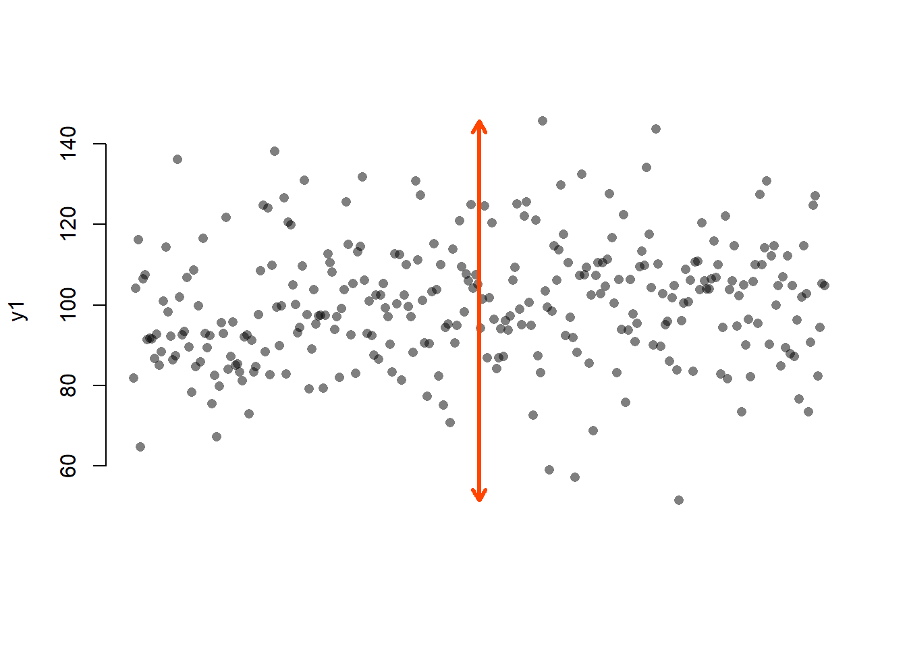
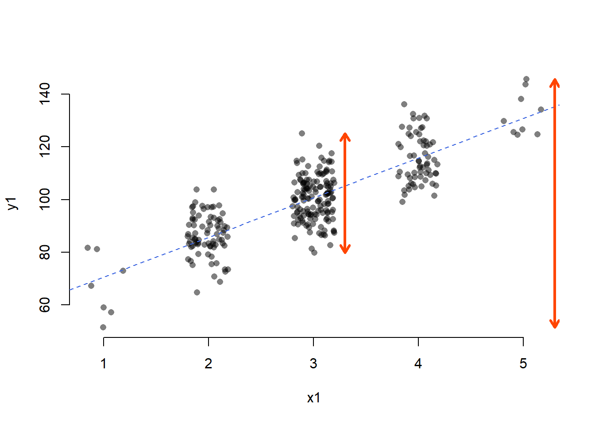

\(R^2\) is an index that tells us about the proportion of the variance in the outcome variable accounted for (or, explained, in an experimental context) by our model. Let’s say variance is some representation of the spread of your data. So let’s make us some data:
y1 <- rnorm(300, 100, 15)
var(y1)## [1] 226.9448It is not easy to visualise variance so let’s take range as a proxy (an imperfect one but hey!):
t_black <- rgb(0, 0, 0, alpha = .5) # transparent black
plot(y1, bty = "n", xaxt = "n", xlab = NA, pch = 16, col = t_black)
arrows((1+length(y1))/2, min(y1), y1 = max(y1), code = 3, length = .1, col = "orangered", lwd = 3)
The red arrow shows the range of the y1 variable. OK, now let’s create a variable x1 that correlates with y1…
x1 <- -35 + 1.52 * y1 + rnorm(300, 0, 12)
# let's categorise it into 5 bins (numbers 1-5)
x1 <- cut(x1, 5, labels = F)…and fit a linear model predicting y1 by x1.
m1 <- lm(y1 ~ x1)
#let's see...
summary(m1)##
## Call:
## lm(formula = y1 ~ x1)
##
## Residuals:
## Min 1Q Median 3Q Max
## -20.9470 -6.2850 -0.4077 6.0138 24.3762
##
## Coefficients:
## Estimate Std. Error t value Pr(>|t|)
## (Intercept) 55.6909 1.8441 30.20 <2e-16 ***
## x1 15.0353 0.6002 25.05 <2e-16 ***
## ---
## Signif. codes: 0 '***' 0.001 '**' 0.01 '*' 0.05 '.' 0.1 ' ' 1
##
## Residual standard error: 8.563 on 298 degrees of freedom
## Multiple R-squared: 0.678, Adjusted R-squared: 0.6769
## F-statistic: 627.5 on 1 and 298 DF, p-value: < 2.2e-16Right, so the \(R^2\) is roughly 0.68, which means that about 68% of the variance in y1 is accounted for by our model (as our model has only a single predictor, we can say accounted for by variance in x1). That means that, while the overall variance of y1 is var(y1) \(\approx\) 226.94, the mean variance at a given level of x1 weighted by the number of points at that level of x1 will be reduced by 68% (\(\approx\) 73.073):
library(doBy)
# let's summarise var(x) by y
(smry <- summaryBy(y1 ~ x1, data.frame(x1, y1), FUN = var))## x1 y1.var
## 1 1 141.96871
## 2 2 62.49969
## 3 3 72.27107
## 4 4 84.09501
## 5 5 68.62077# extract only the variances
(vars <- smry[ , 2])## [1] 141.96871 62.49969 72.27107 84.09501 68.62077# get the wieghts (proportion of cases per level of x)
(wghts <- prop.table(table(x1)))## x1
## 1 2 3 4 5
## 0.02333333 0.26000000 0.48000000 0.20666667 0.03000000#calculate weighted mean
weighted.mean(vars, w = wghts)## [1] 73.69089The discrepancy is due to a very slight differences in the calculations used by lm() and var() (see further down) and is negligible.
To visualise, let’s turn to range as a proxy for variance:
plot(jitter(x1), y1, bty = "n", xlab = "x1", pch = 16, col = t_black)
abline(m1, lty = 2, col = "royalblue")
arrows(5.3, min(y1), y1 = max(y1), code = 3, length = .1, col = "orangered", lwd = 3)
arrows(3.3, min(y1[x1 == 3]), y1 = max(y1[x1 == 3]), code = 3, length = .1, col = "orangered", lwd = 3)
Even though range and variance are not the same thing and thus the numbers don’t check out, you can see that the spread of y1 at x1 = 3 is much smaller than the overall spread of y1.
A different way of looking at this through the the language of mean squared residual. The total variance in your outcome variable can be broken down into two components: variance explained by your model and variance left unexplained by it. Mean squared residual is really the same as variance left unexplained by a model. \(R^2\) is then simply the proportion of explained to total variance.
You may ask, if all variance can be divided into explained and residual variance, how does one divide var(x)? Thank you, that is an excellent question!
Well, you can think of the total variance as the residual variance left over from the intercept-only model:
# let's create another variable x
x2 <- scale(rnorm(100, 0, 1))
# and a variable y dependent on x
y2 <- scale(x2 + rnorm(100, 0, .5))
# these are standardised variable, so their variance = standard deviation = 1
c(var(x2), var(y2))## [1] 1 1Now, let’s fit the intercept-only (AKA null) model for y2:
null_m <- lm(y2 ~ 1)
summary(null_m)##
## Call:
## lm(formula = y2 ~ 1)
##
## Residuals:
## Min 1Q Median 3Q Max
## -2.40007 -0.65069 -0.09728 0.63258 2.75155
##
## Coefficients:
## Estimate Std. Error t value Pr(>|t|)
## (Intercept) 3.053e-17 1.000e-01 0 1
##
## Residual standard error: 1 on 99 degrees of freedomAs you can see, the “residual standard error” (that’s the same as the the square root of the mean residual variance) is 1. To get the latter from the former, we need to square it, since if
\[SE_{resid} = \sqrt{var_{resid}}\] , then
\[SE_{resid}^2 = var_{resid}\]
(You might have noticed that this is the same relationship as that between variance and standard deviation, \(var(x) = SD(x)^2\).)
Because \(1^2 = 1\), the mean residual variance is also 1. The model explains no variance whatsoever. That makes sense, as the null model is simply the mean, as you can see when you compare the intercept value to mean(y2) = 0 (both are 0 but, for an obscure reason having to do with how computers store numbers, R says they are tiny non-zero numbers).
So, total variance (or the mean total square, in our case 1) is the explained variance (or mean square of the model; 0) + unexplained variance (mean squared residual; 1). To understand why it’s called the mean squeared residual (or the mean residual square), let’s do what it says on the tin: take the mean of the squared model residuals:
mean(resid(null_m)^2)## [1] 0.99Just like in the first example, the discrepancy is caused by the way the mean residual square is calculated. Unlike normal mean, you don’t divide by n (here 100) but by residual degrees of freedom (n\(-\)k, where k is the number of estimated parameters, in our case 100 \(-\) 1 = 99):
sum(resid(null_m)^2)/null_m$df.residual## [1] 1Don’t you just love when it all checks out?
Right, so that shows us that the null model is pretty rubbish. When you fit a better model, the explained variance will go up and the residual variance will go down. Let’s see how that happens when we predict y2 by x2:
# fit the model
m2 <- lm(y2 ~ x2)
summary(m2)##
## Call:
## lm(formula = y2 ~ x2)
##
## Residuals:
## Min 1Q Median 3Q Max
## -1.39441 -0.25470 -0.01398 0.32161 1.02120
##
## Coefficients:
## Estimate Std. Error t value Pr(>|t|)
## (Intercept) 1.639e-17 4.663e-02 0.00 1
## x2 8.859e-01 4.686e-02 18.91 <2e-16 ***
## ---
## Signif. codes: 0 '***' 0.001 '**' 0.01 '*' 0.05 '.' 0.1 ' ' 1
##
## Residual standard error: 0.4663 on 98 degrees of freedom
## Multiple R-squared: 0.7848, Adjusted R-squared: 0.7826
## F-statistic: 357.4 on 1 and 98 DF, p-value: < 2.2e-16The \(R^2\) of our model is about 0.7848 which is pretty good. The residual standard error is 0.4663. When squared this gives us the residual variance, 0.4663\(^2\) = 0.2174. As mentioned earlier, \(R^2 = \frac{explained~var}{total~var}\) and since explained variance equals total\(-\)residual variance, our \(R^2\) should be \(\frac{1 - .22}{1}\) = .78. Beauty!
And finally, for the benefit of visualisation and pure delight, let’s leave you with this nerd eye candy.
Ciao!